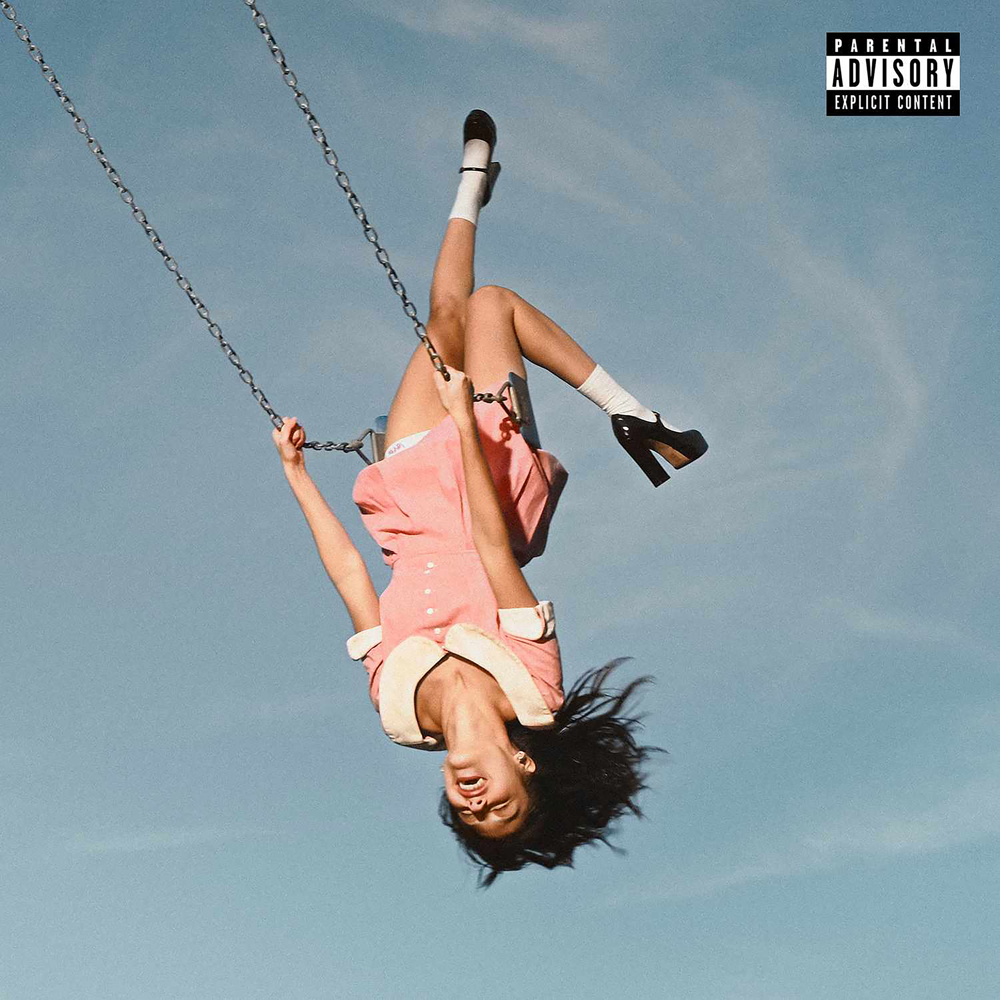
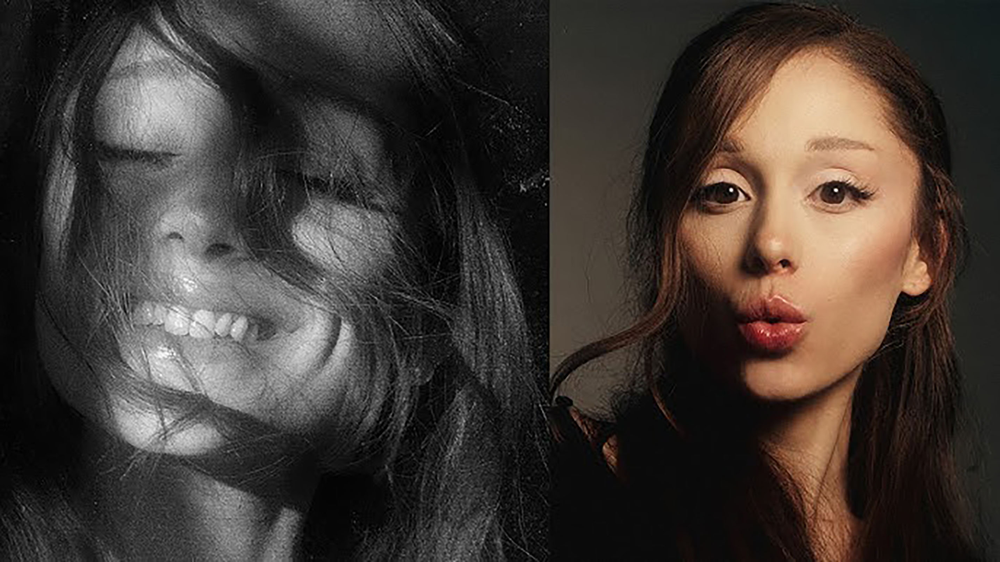
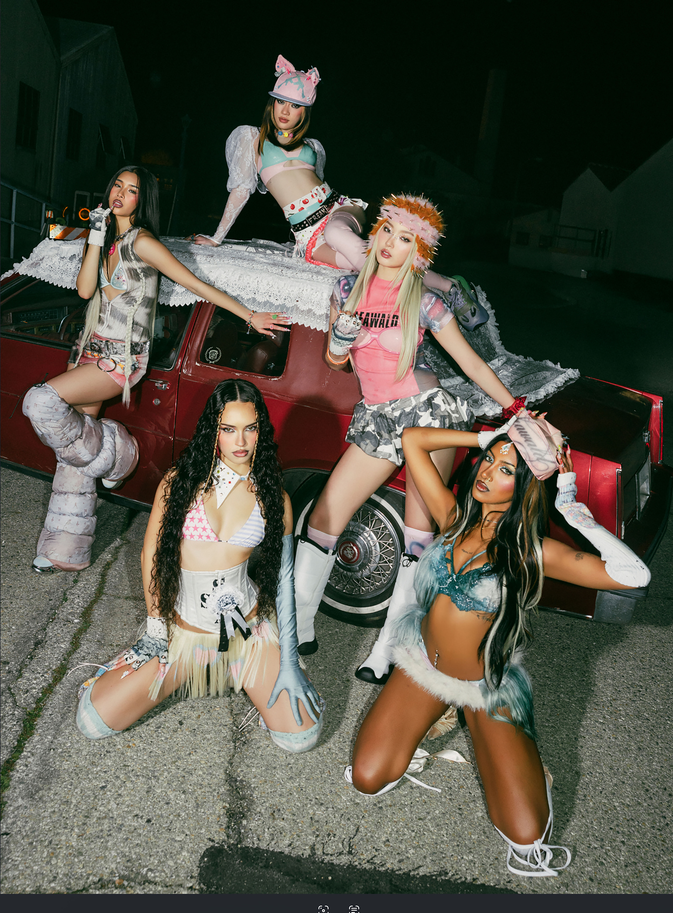
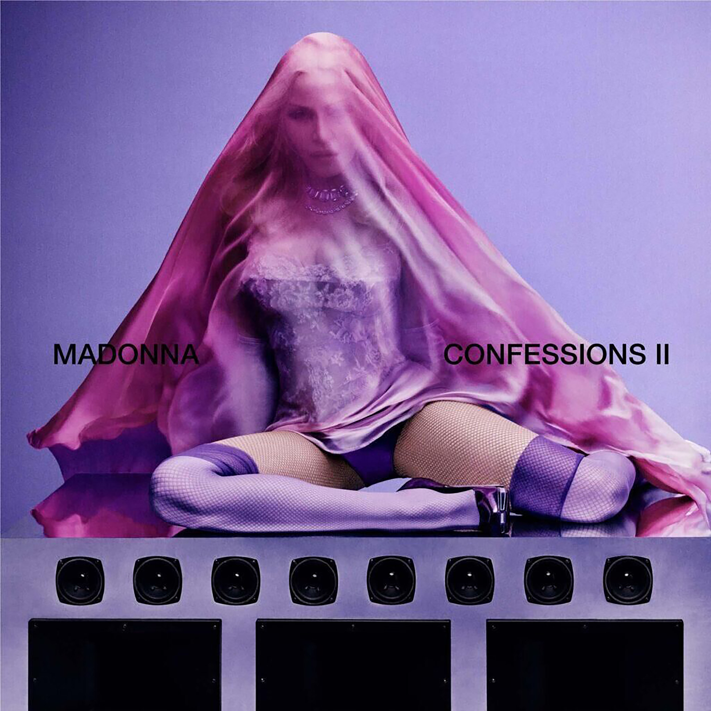

Anticipated Pop Albums of 2026
Pop music fans have a lot to look forward to in 2026. From comeback albums to completely new eras, artists across the industry are already creating excitement online. Social media platforms like TikTok and Instagram have made fans more connected to artists than ever before, allowing teaser photos, rumors, and surprise announcements to spread instantly. Many listeners are predicting that 2026 will become one of the biggest years for pop music in recent memory.
After the success of Guts, Olivia Rodrigo remains one of the most anticipated artists of the year. Fans are eager to see how her sound evolves as she continues turning emotional experiences into relatable music. Many believe her next project could feature darker themes, stronger visuals, and a more mature style while still keeping the honest songwriting that made her popular. Online discussions and fan theories continue building anticipation for her rumored next album.

Ariana Grande is also expected to make a huge impact in 2026. After focusing on acting and beauty projects in recent years, fans are excited about the possibility of a new musical era. Grande’s combination of emotional lyrics and powerful vocals has helped her remain one of the biggest names in pop music. Many listeners are hoping for a mix of emotional ballads and upbeat dance tracks that reflect both personal growth and artistic change.
New artists are also beginning to shape the future of pop music. Global girl group KATSEYE has quickly gained attention for combining K-pop-inspired performances with Western pop influences. Their strong online presence and growing fanbase have made them one of the most talked-about emerging groups. As international music continues becoming more mainstream, KATSEYE represents a new generation of artists driven by digital culture and global audiences.

Alongside newer artists, legendary performers are continuing to influence modern pop culture. Madonna remains one of the most important figures in music history, and rumors about a possible Confessions II project have already created excitement online. Fans are hoping the album revisits the dance-pop sound that made Confessions on a Dance Floor such an iconic era. Even after decades in the industry, Madonna continues inspiring younger artists and redefining pop music trends.
